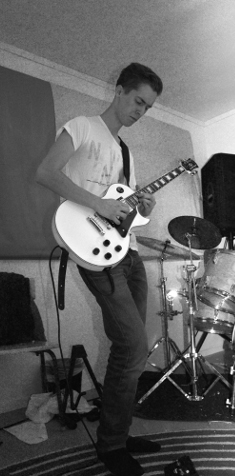
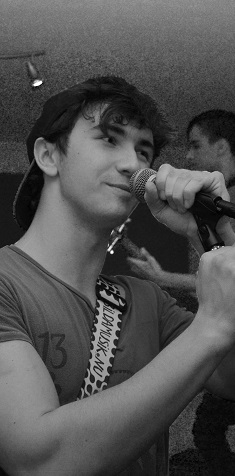
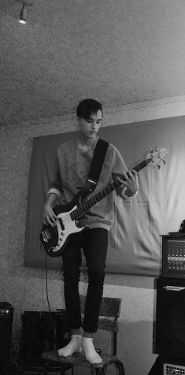
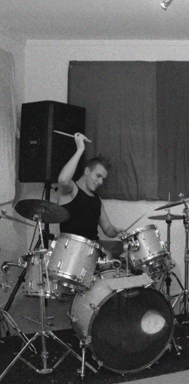

Viktor Rosvall
Swedish bloke, guitarist and bass player with inspirations from American and British rock and metal.
Favorite bands like Metallica, Avenged Sevenfold, Slipknot, Sum-41 and Muse.
In his spare time he plays games and practices guitar. Have experience playing on stage.
William "Norsken" Johansson
Half Norwegian, self-taught troubadour with influences of Swedish artists such as Håkan Hellström, Magnus Uggla
and American bands such as Sum-41, Greenday, The Offspring and Blink-128.
Other than music he live by his biceps.
Erik Helmersson
Half American bass player. Likes almost all music genres.
In his spare time, he is at home sleeping and playing games.
Sometimes he picks up the base and pull some sick bass lines and gladly accept donations of Doritos.
Kristoffer "Barka" Engström
Self-taught drummer and like all music genres.
In his spare time he works out at the gym and plays computer.
He has a big mohawk which is awesome.
Viktor Rosvall
Svensk snubbe, guitarist and basist. Inspirationer från Amerikanska och Britiska rock och metall band.
Favoritbanden är Metallica, Avenged Sevenfold, Slipknot, Sum-41 and Muse.
På sin fritid spelar han och över gitarr. Har mycket erfarenhet av att spela på scen.
William "Norsken" Johansson
Halvnorsk självlärd trubadur med influencer av Svenska artister som Håkan Hellström, Magnus Uggla,
Och Amerikanska band som Sum-41, Greenday och The Offspring.
Förutom musik så lever han för sin bicep.
Erik Helmersson
Halv amerikansk basist. Gillar nästan alla typer av musik.
På sin fritid sover han eller spelar spel.
Ibland tar han basen och spelar några sjuka basriff och tar gladligen emot donationer i Doritos.
Kristoffer "Barka" Engström
Sjlälvlärd trummis och gillar alla typer av musik.
På sin fritid tränar han på gym och spelar dator.
Han har en stor mohawk vilket är allt som behövs.

|
 |
 |